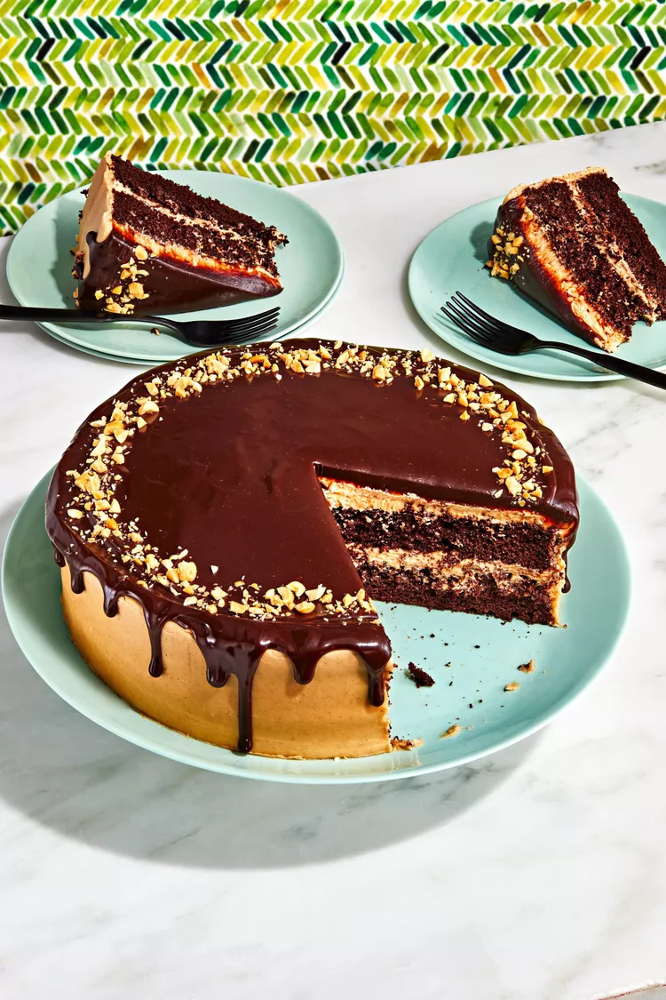

Devil's Food Cake With Salted Peanut Butter Frosting And Ganache

Ingredients
For the Cake:
- 2 cups all-purpose flour
- 1 cup unsweetened cocoa powder
- 2 cups granulated sugar
- 1 tsp baking powder
- 1/2 tsp baking soda
- 1/2 tsp salt
- 1 cup buttermilk
- 1/2 cup vegetable oil
- 2 large eggs
- 2 tsp vanilla extract
- 1 cup hot water
For the Salted Peanut Butter Frosting:
- 1 cup unsalted butter, softened
- 1 cup creamy peanut butter
- 4 cups powdered sugar
- 1/4 cup milk
- 1 tsp vanilla extract
- 1/2 tsp salt
For the Ganache:
- 1 cup heavy cream
- 8 oz semisweet chocolate, chopped
- 1/2 tsp sea salt
Instructions
For the Cake:
- Preheat oven to 350°F (175°C). Grease and flour three 9-inch round cake pans.
- In a large bowl, sift together flour, cocoa powder, sugar, baking powder, baking soda, and salt.
- In another bowl, whisk together buttermilk, vegetable oil, eggs, and vanilla extract until well combined.
- Add wet ingredients to dry ingredients and mix until just combined. Stir in hot water until batter is smooth.
- Divide batter evenly among prepared cake pans. Bake for 25-30 minutes, or until a toothpick inserted into the center comes out clean.
- Remove cakes from oven and let cool in pans for 10 minutes. Then transfer to wire racks to cool completely.
For the Salted Peanut Butter Frosting:
- In a large bowl, beat butter and peanut butter until smooth.
- Add powdered sugar, milk, vanilla extract, and salt. Beat until creamy and smooth.
For the Ganache:
- In a small saucepan, heat heavy cream until it just begins to simmer.
- Place chopped chocolate in a heatproof bowl. Pour hot cream over chocolate and let sit for 1 minute.
- Stir until chocolate is completely melted and ganache is smooth. Stir in sea salt.
Assembly
- Place one cake layer on a serving plate. Spread a layer of peanut butter frosting on top.
- Repeat with remaining cake layers and frosting.
- Pour ganache over the top of the cake, allowing it to drip down the sides.
- Chill cake in the refrigerator for 30 minutes to set the ganache.
- Optional: Garnish with chopped peanuts or chocolate shavings before serving.
Enjoy your cake!